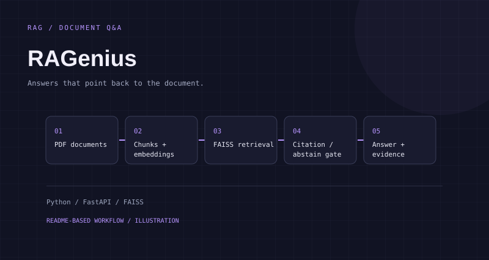

RAGenius.
Answers that point back to the document.
The problem.
Finding an answer in a set of PDFs is only half the task. Readers also need to know which passage supports it, and when the system does not have enough evidence.
How I approached it.
I split documents into overlapping chunks, embed them, and retrieve candidate passages with FAISS. A FastAPI service returns the answer and evidence, while a Streamlit interface makes the workflow accessible. The answering path includes citation and abstention checks.
The workflow.

View Mermaid diagram source
flowchart LR
A[PDF documents] --> B[Chunks and embeddings]
B --> C[FAISS retrieval]
C --> D{Evidence available?}
D -->|Yes| E[Answer with citations]
D -->|No| F[Abstain]The diagram above is a simplified visual summary. This Mermaid source captures the branching workflow.
A closer look.

Results, with context.
52/75 tasks passed in the committed evaluation
10/10 should-abstain tasks passed
Developer-authored benchmark; not a production accuracy claim.
The report records 42/65 document-Q&A tasks passing and an average latency of 7.387 seconds for that run. Results depend on the document set, evaluation rules and hardware. A public hosted demo and genuine UI capture are still TODOs.
These statements come from the project README and linked artifacts. They are scoped to the documented run or fixture; they do not imply production use.
What I learned.
The evaluation makes the tradeoff visible: citation coverage does not guarantee a useful answer. The committed report includes short-answer and keyword-miss failures, so improving answer completeness is a clearer next step than claiming the system is solved.